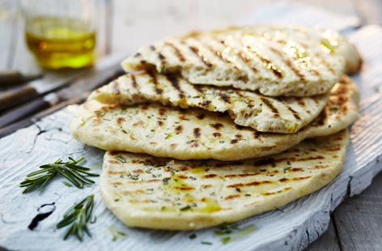

Charred Flatbreads

Serves 4
Ingredients
- 400g/14oz strong white bread flour, plus extra for dusting
- 100g/3½oz semolina flour
- 1 tsp sugar
- 2 tsp dried yeast
- 2 tsp salt
- oil, for greasing & drizzling
- polenta, for dusting
Method
- To make the flatbreads, mix all the ingredients and 375ml/13fl oz water in a food processor with a dough hook for 15 minutes until a smooth, elastic dough is formed. Divide into four even balls and fold in on themselves on an oiled work surface to create a tight ball. Leave to rest for at least 2 hours in the fridge on an oiled tray covered with oiled cling film.
- Roll out each ball on a lightly floured work surface to 8mm/½in thickness, then place on a baking tray lined with baking paper that is dusted with polenta. Cover again with oiled cling film and leave to prove for 30 minutes. Drizzle the flatbreads lightly with oil then cook on a hot griddle pan for 1 minute on each side until puffy, slightly charred and cooked through.